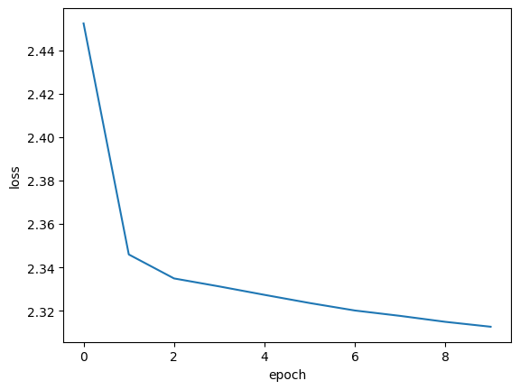

Graph representation learning with node2vec
Author: Khalid Salama
Date created: 2021/05/15
Last modified: 2026/02/04
Description: Implementing the node2vec model to generate embeddings for movies from the MovieLens dataset.

Introduction
Learning useful representations from objects structured as graphs is useful for a variety of machine learning (ML) applications—such as social and communication networks analysis, biomedicine studies, and recommendation systems. Graph representation Learning aims to learn embeddings for the graph nodes, which can be used for a variety of ML tasks such as node label prediction (e.g. categorizing an article based on its citations) and link prediction (e.g. recommending an interest group to a user in a social network).
node2vec is a simple, yet scalable and effective technique for learning low-dimensional embeddings for nodes in a graph by optimizing a neighborhood-preserving objective. The aim is to learn similar embeddings for neighboring nodes, with respect to the graph structure.
Given your data items structured as a graph (where the items are represented as nodes and the relationship between items are represented as edges), node2vec works as follows:
- Generate item sequences using (biased) random walk.
- Create positive and negative training examples from these sequences.
- Train a word2vec model (skip-gram) to learn embeddings for the items.
In this example, we demonstrate the node2vec technique on the small version of the Movielens dataset to learn movie embeddings. Such a dataset can be represented as a graph by treating the movies as nodes, and creating edges between movies that have similar ratings by the users. The learnt movie embeddings can be used for tasks such as movie recommendation, or movie genres prediction.
This example requires networkx package, which can be installed using the following command:
pip install networkx
Setup
import os
from collections import defaultdict
import math
import networkx as nx
import random
from tqdm import tqdm
from zipfile import ZipFile
from urllib.request import urlretrieve
import numpy as np
import pandas as pd
import keras
from keras import ops
from keras import layers
import matplotlib.pyplot as plt
# Set seed for reproducibility
keras.utils.set_random_seed(42)
os.environ["KERAS_BACKEND"] = "jax" # "jax", "torch", "tensorflow"
Download the MovieLens dataset and prepare the data
The small version of the MovieLens dataset includes around 100k ratings from 610 users on 9,742 movies.
First, let's download the dataset. The downloaded folder will contain
three data files: users.csv, movies.csv, and ratings.csv. In this example,
we will only need the movies.dat, and ratings.dat data files.
urlretrieve(
"http://files.grouplens.org/datasets/movielens/ml-latest-small.zip", "movielens.zip"
)
ZipFile("movielens.zip", "r").extractall()
Then, we load the data into a Pandas DataFrame and perform some basic preprocessing.
# Load movies to a DataFrame.
movies = pd.read_csv("ml-latest-small/movies.csv")
# Create a `movieId` string.
movies["movieId"] = movies["movieId"].apply(lambda x: f"movie_{x}")
# Load ratings to a DataFrame.
ratings = pd.read_csv("ml-latest-small/ratings.csv")
# Convert the `ratings` to floating point
ratings["rating"] = ratings["rating"].apply(lambda x: float(x))
# Create the `movie_id` string.
ratings["movieId"] = ratings["movieId"].apply(lambda x: f"movie_{x}")
print("Movies data shape:", movies.shape)
print("Ratings data shape:", ratings.shape)
Movies data shape: (9742, 3)
Ratings data shape: (100836, 4)
Let's inspect a sample instance of the ratings DataFrame.
ratings.head()
| userId | movieId | rating | timestamp | |
|---|---|---|---|---|
| 0 | 1 | movie_1 | 4.0 | 964982703 |
| 1 | 1 | movie_3 | 4.0 | 964981247 |
| 2 | 1 | movie_6 | 4.0 | 964982224 |
| 3 | 1 | movie_47 | 5.0 | 964983815 |
| 4 | 1 | movie_50 | 5.0 | 964982931 |
Next, let's check a sample instance of the movies DataFrame.
movies.head()
| movieId | title | genres | |
|---|---|---|---|
| 0 | movie_1 | Toy Story (1995) | Adventure|Animation|Children|Comedy|Fantasy |
| 1 | movie_2 | Jumanji (1995) | Adventure|Children|Fantasy |
| 2 | movie_3 | Grumpier Old Men (1995) | Comedy|Romance |
| 3 | movie_4 | Waiting to Exhale (1995) | Comedy|Drama|Romance |
| 4 | movie_5 | Father of the Bride Part II (1995) | Comedy |
Implement two utility functions for the movies DataFrame.
def get_movie_title_by_id(movieId):
return list(movies[movies.movieId == movieId].title)[0]
def get_movie_id_by_title(title):
return list(movies[movies.title == title].movieId)[0]
Construct the Movies graph
We create an edge between two movie nodes in the graph if both movies are rated
by the same user >= min_rating. The weight of the edge will be based on the
pointwise mutual information
between the two movies, which is computed as: log(xy) - log(x) - log(y) + log(D), where:
xyis how many users rated both moviexand movieywith >=min_rating.xis how many users rated moviex>=min_rating.yis how many users rated moviey>=min_rating.Dtotal number of movie ratings >=min_rating.
Step 1: create the weighted edges between movies.
min_rating = 5
pair_frequency = defaultdict(int)
item_frequency = defaultdict(int)
# Filter instances where rating is greater than or equal to min_rating.
rated_movies = ratings[ratings.rating >= min_rating]
# Group instances by user.
movies_grouped_by_users = list(rated_movies.groupby("userId"))
for group in tqdm(
movies_grouped_by_users,
position=0,
leave=True,
desc="Compute movie rating frequencies",
):
# Get a list of movies rated by the user.
current_movies = list(group[1]["movieId"])
for i in range(len(current_movies)):
item_frequency[current_movies[i]] += 1
for j in range(i + 1, len(current_movies)):
x = min(current_movies[i], current_movies[j])
y = max(current_movies[i], current_movies[j])
pair_frequency[(x, y)] += 1
Compute movie rating frequencies: 0%| | 0/573 [00:00<?, ?it/s]
Compute movie rating frequencies: 49%|████████████████████████████████████▌ | 283/573 [00:00<00:00, 2665.28it/s]
Compute movie rating frequencies: 96%|███████████████████████████████████████████████████████████████████████ | 550/573 [00:00<00:00, 2460.74it/s]
Compute movie rating frequencies: 100%|██████████████████████████████████████████████████████████████████████████| 573/573 [00:00<00:00, 2288.26it/s]
Step 2: create the graph with the nodes and the edges
To reduce the number of edges between nodes, we only add an edge between movies
if the weight of the edge is greater than min_weight.
min_weight = 10
D = math.log(sum(item_frequency.values()))
# Create the movies undirected graph.
movies_graph = nx.Graph()
# Add weighted edges between movies.
# This automatically adds the movie nodes to the graph.
for pair in tqdm(
pair_frequency, position=0, leave=True, desc="Creating the movie graph"
):
x, y = pair
xy_frequency = pair_frequency[pair]
x_frequency = item_frequency[x]
y_frequency = item_frequency[y]
pmi = math.log(xy_frequency) - math.log(x_frequency) - math.log(y_frequency) + D
weight = pmi * xy_frequency
# Only include edges with weight >= min_weight.
if weight >= min_weight:
movies_graph.add_edge(x, y, weight=weight)
Creating the movie graph: 0%| | 0/298586 [00:00<?, ?it/s]
Creating the movie graph: 46%|█████████████████████████████████▍ | 136673/298586 [00:00<00:00, 1366688.94it/s]
Creating the movie graph: 99%|████████████████████████████████████████████████████████████████████████▎| 295749/298586 [00:00<00:00, 1498456.83it/s]
Creating the movie graph: 100%|█████████████████████████████████████████████████████████████████████████| 298586/298586 [00:00<00:00, 1476425.78it/s]
Let's display the total number of nodes and edges in the graph. Note that the number of nodes is less than the total number of movies, since only the movies that have edges to other movies are added.
print("Total number of graph nodes:", movies_graph.number_of_nodes())
print("Total number of graph edges:", movies_graph.number_of_edges())
Total number of graph nodes: 1405
Total number of graph edges: 40043
Let's display the average node degree (number of neighbours) in the graph.
degrees = []
for node in movies_graph.nodes:
degrees.append(movies_graph.degree[node])
print("Average node degree:", round(sum(degrees) / len(degrees), 2))
Average node degree: 57.0
Step 3: Create vocabulary and a mapping from tokens to integer indices
The vocabulary is the nodes (movie IDs) in the graph.
vocabulary = ["NA"] + list(movies_graph.nodes)
vocabulary_lookup = {token: idx for idx, token in enumerate(vocabulary)}
Implement the biased random walk
A random walk starts from a given node, and randomly picks a neighbour node to move to.
If the edges are weighted, the neighbour is selected probabilistically with
respect to weights of the edges between the current node and its neighbours.
This procedure is repeated for num_steps to generate a sequence of related nodes.
The biased random walk balances between breadth-first sampling (where only local neighbours are visited) and depth-first sampling (where distant neighbours are visited) by introducing the following two parameters:
- Return parameter (
p): Controls the likelihood of immediately revisiting a node in the walk. Setting it to a high value encourages moderate exploration, while setting it to a low value would keep the walk local. - In-out parameter (
q): Allows the search to differentiate between inward and outward nodes. Setting it to a high value biases the random walk towards local nodes, while setting it to a low value biases the walk to visit nodes which are further away.
def next_step(graph, previous, current, p, q):
neighbors = list(graph.neighbors(current))
weights = []
for neighbor in neighbors:
if neighbor == previous:
weights.append(graph[current][neighbor]["weight"] / p)
elif graph.has_edge(neighbor, previous):
weights.append(graph[current][neighbor]["weight"])
else:
weights.append(graph[current][neighbor]["weight"] / q)
weight_sum = sum(weights)
probabilities = [weight / weight_sum for weight in weights]
next_node = np.random.choice(neighbors, size=1, p=probabilities)[0]
return next_node
def random_walk(graph, num_walks, num_steps, p, q):
walks = []
nodes = list(graph.nodes())
for walk_iteration in range(num_walks):
random.shuffle(nodes)
for node in tqdm(
nodes,
desc=f"Random walks iteration {walk_iteration + 1}",
leave=False,
mininterval=1.0,
):
walk = [node]
while len(walk) < num_steps:
current = walk[-1]
previous = walk[-2] if len(walk) > 1 else None
walk.append(next_step(graph, previous, current, p, q))
walks.append([vocabulary_lookup[token] for token in walk])
return walks
Generate training data using the biased random walk
You can explore different configurations of p and q to different results of
related movies.
# Random walk return parameter.
p = 1
# Random walk in-out parameter.
q = 1
# Number of iterations of random walks.
num_walks = 5
# Number of steps of each random walk.
num_steps = 10
walks = random_walk(movies_graph, num_walks, num_steps, p, q)
print("Number of walks generated:", len(walks))
Random walks iteration 1: 0%| | 0/1405 [00:00<?, ?it/s]
Random walks iteration 1: 72%|█████████████████████████████████████████████████████████▌ | 1012/1405 [00:01<00:00, 1011.26it/s]
Random walks iteration 2: 0%| | 0/1405 [00:00<?, ?it/s]
Random walks iteration 2: 72%|█████████████████████████████████████████████████████████▊ | 1016/1405 [00:01<00:00, 1015.77it/s]
Random walks iteration 3: 0%| | 0/1405 [00:00<?, ?it/s]
Random walks iteration 3: 75%|████████████████████████████████████████████████████████████ | 1054/1405 [00:01<00:00, 1053.31it/s]
Random walks iteration 4: 0%| | 0/1405 [00:00<?, ?it/s]
Random walks iteration 4: 74%|██████████████████████████████████████████████████████████▊ | 1033/1405 [00:01<00:00, 1032.74it/s]
Random walks iteration 5: 0%| | 0/1405 [00:00<?, ?it/s]
Random walks iteration 5: 74%|███████████████████████████████████████████████████████████ | 1037/1405 [00:01<00:00, 1035.86it/s]
Number of walks generated: 7025
Generate positive and negative examples
To train a skip-gram model, we use the generated walks to create positive and negative training examples. In Keras 3, the legacy preprocessing module has been removed. We now implement a manual skip-gram sampling function using NumPy to generate positive and negative training examples from our random walks. Each example includes the following features:
target: A movie in a walk sequence.context: Another movie in a walk sequence.weight: How many times these two movies occurred in walk sequences.label: The label is 1 if these two movies are samples from the walk sequences, otherwise (i.e., if randomly sampled) the label is 0.
Generate examples
def manual_skipgrams(sequence, vocabulary_size, window_size=5, negative_samples=4):
"""
A NumPy-based replacement for the legacy keras.preprocessing.sequence.skipgrams.
Generates (target, context) pairs with positive and negative labels,
ensuring negative samples are not in the positive context window.
"""
pairs = []
labels = []
for i, target in enumerate(sequence):
start = max(0, i - window_size)
end = min(len(sequence), i + window_size + 1)
positive_contexts = {sequence[j] for j in range(start, end) if i != j}
for j in range(start, end):
if i == j:
continue
context = sequence[j]
pairs.append([target, context])
labels.append(1)
for _ in range(negative_samples):
negative_context = np.random.randint(0, vocabulary_size)
while (
negative_context == target or negative_context in positive_contexts
):
negative_context = np.random.randint(0, vocabulary_size)
pairs.append([target, negative_context])
labels.append(0)
return pairs, labels
def generate_examples(sequences, window_size, num_negative_samples, vocabulary_size):
example_weights = defaultdict(int)
# Iterate over all walks
for sequence in tqdm(
sequences,
desc="Generating positive and negative examples",
leave=False,
mininterval=1.0,
):
# Use our manual skipgrams function
pairs, labels = manual_skipgrams(
sequence,
vocabulary_size=vocabulary_size,
window_size=window_size,
negative_samples=num_negative_samples,
)
for idx in range(len(pairs)):
pair = pairs[idx]
label = labels[idx]
target, context = min(pair[0], pair[1]), max(pair[0], pair[1])
if target == context:
continue
entry = (target, context, label)
example_weights[entry] += 1
targets, contexts, labels, weights = [], [], [], []
for entry, weight in example_weights.items():
target, context, label = entry
targets.append(target)
contexts.append(context)
labels.append(label)
weights.append(weight)
return (
np.array(targets, dtype="int32"),
np.array(contexts, dtype="int32"),
np.array(labels, dtype="float32"),
np.array(weights, dtype="float32"),
)
# Execute the generation
num_negative_samples = 4
targets, contexts, labels, weights = generate_examples(
sequences=walks,
window_size=num_steps,
num_negative_samples=num_negative_samples,
vocabulary_size=len(vocabulary),
)
Generating positive and negative examples: 0%| | 0/7025 [00:00<?, ?it/s]
Generating positive and negative examples: 19%|███████████▊ | 1320/7025 [00:01<00:04, 1319.75it/s]
Generating positive and negative examples: 38%|████████████████████████▏ | 2700/7025 [00:02<00:03, 1354.92it/s]
Generating positive and negative examples: 58%|████████████████████████████████████▎ | 4055/7025 [00:03<00:02, 1351.41it/s]
Generating positive and negative examples: 77%|████████████████████████████████████████████████▍ | 5407/7025 [00:04<00:01, 1339.05it/s]
Generating positive and negative examples: 96%|████████████████████████████████████████████████████████████▌ | 6747/7025 [00:05<00:00, 1300.35it/s]
Let's display the shapes of the outputs
print(f"Targets shape: {targets.shape}")
print(f"Contexts shape: {contexts.shape}")
print(f"Labels shape: {labels.shape}")
print(f"Weights shape: {weights.shape}")
Targets shape: (883654,)
Contexts shape: (883654,)
Labels shape: (883654,)
Weights shape: (883654,)
Data Loading with PyDataset
We replace the tf.data pipeline with keras.utils.PyDataset. This ensures our data pipeline is fully backend-agnostic and avoids symbolic tensor errors when running on JAX or PyTorch.
batch_size = 1024
class MovieLensDataset(keras.utils.PyDataset):
def __init__(self, targets, contexts, labels, weights, batch_size, **kwargs):
super().__init__(**kwargs)
self.targets = targets
self.contexts = contexts
self.labels = labels
self.weights = weights
self.batch_size = batch_size
def __len__(self):
return len(self.targets) // self.batch_size
def __getitem__(self, index):
low = index * self.batch_size
high = (index + 1) * self.batch_size
target = self.targets[low:high]
context = self.contexts[low:high]
label = self.labels[low:high]
weight = self.weights[low:high]
return {"target": target, "context": context}, label, weight
batch_size = 1024
dataset = MovieLensDataset(targets, contexts, labels, weights, batch_size)
Train the skip-gram model
Our skip-gram is a simple binary classification model that works as follows:
- An embedding is looked up for the
targetmovie. - An embedding is looked up for the
contextmovie. - The dot product is computed between these two embeddings.
- The result (after a sigmoid activation) is compared to the label.
- A binary crossentropy loss is used.
learning_rate = 0.001
embedding_dim = 50
num_epochs = 10
Implement the model
def create_model(vocabulary_size, embedding_dim):
target_in = layers.Input(name="target", shape=(), dtype="int32")
context_in = layers.Input(name="context", shape=(), dtype="int32")
embed_item = layers.Embedding(
input_dim=vocabulary_size,
output_dim=embedding_dim,
embeddings_initializer="he_normal",
embeddings_regularizer=keras.regularizers.l2(1e-6),
name="item_embeddings",
)
target_embed = embed_item(target_in)
context_embed = embed_item(context_in)
dot_similarity = layers.Dot(axes=1, normalize=False, name="dot_similarity")(
[target_embed, context_embed]
)
output = layers.Reshape((1,))(dot_similarity)
return keras.Model(inputs=[target_in, context_in], outputs=output)
Train the model
We instantiate the model and compile it.
model = create_model(len(vocabulary), embedding_dim)
model.compile(
optimizer=keras.optimizers.Adam(learning_rate),
loss=keras.losses.BinaryCrossentropy(from_logits=True),
)
Let's plot the model.
keras.utils.plot_model(
model,
show_shapes=True,
show_dtype=True,
show_layer_names=True,
)
You must install graphviz (see instructions at https://graphviz.gitlab.io/download/) for `plot_model` to work.
Now we train the model on the dataset.
history = model.fit(dataset, epochs=num_epochs)
Epoch 1/10
862/862 ━━━━━━━━━━━━━━━━━━━━ 1s 1ms/step - loss: 2.4523
Epoch 2/10
862/862 ━━━━━━━━━━━━━━━━━━━━ 1s 1ms/step - loss: 2.3459
Epoch 3/10
862/862 ━━━━━━━━━━━━━━━━━━━━ 1s 1ms/step - loss: 2.3349
Epoch 4/10
862/862 ━━━━━━━━━━━━━━━━━━━━ 1s 1ms/step - loss: 2.3312
Epoch 5/10
862/862 ━━━━━━━━━━━━━━━━━━━━ 1s 1ms/step - loss: 2.3273
Epoch 6/10
862/862 ━━━━━━━━━━━━━━━━━━━━ 1s 1ms/step - loss: 2.3236
Epoch 7/10
862/862 ━━━━━━━━━━━━━━━━━━━━ 1s 1ms/step - loss: 2.3201
Epoch 8/10
862/862 ━━━━━━━━━━━━━━━━━━━━ 1s 1ms/step - loss: 2.3177
Epoch 9/10
862/862 ━━━━━━━━━━━━━━━━━━━━ 1s 1ms/step - loss: 2.3149
Epoch 10/10
862/862 ━━━━━━━━━━━━━━━━━━━━ 1s 1ms/step - loss: 2.3127
Finally we plot the learning history.
plt.plot(history.history["loss"])
plt.ylabel("loss")
plt.xlabel("epoch")
plt.show()

Analyze the learnt embeddings.
movie_embeddings = model.get_layer("item_embeddings").get_weights()[0]
print("Embeddings shape:", movie_embeddings.shape)
Embeddings shape: (1406, 50)
Find related movies
Define a list with some movies called query_movies.
query_movies = [
"Matrix, The (1999)",
"Star Wars: Episode IV - A New Hope (1977)",
"Lion King, The (1994)",
"Terminator 2: Judgment Day (1991)",
"Godfather, The (1972)",
]
Get the embeddings of the movies in query_movies.
query_tokens = []
for title in query_movies:
movieId = get_movie_id_by_title(title)
query_tokens.append(vocabulary_lookup[movieId])
query_tokens = np.array(query_tokens, dtype="int32")
Compute the consine similarity between the embeddings of query_movies
and all the other movies, then pick the top k for each.
def compute_similarities(query_indices, all_embeddings):
# Lookup embeddings
query_embeds = ops.take(all_embeddings, query_indices, axis=0)
# L2 Normalize using Keras Ops
def l2_norm(x):
# Ensure x is a Keras Tensor before operations with keras.ops
x_tensor = ops.convert_to_tensor(x)
return x_tensor / ops.sqrt(
ops.maximum(ops.sum(ops.square(x_tensor), axis=-1, keepdims=True), 1e-12)
)
query_embeds = l2_norm(query_embeds)
all_embeddings = l2_norm(all_embeddings)
# Cosine Similarity
similarities = ops.matmul(query_embeds, ops.transpose(all_embeddings))
# Get Top K
vals, inds = ops.top_k(similarities, k=5)
return inds
# Convert movie_embeddings to a Keras Tensor before calling compute_similarities
movie_embeddings_tensor = ops.convert_to_tensor(movie_embeddings)
indices = compute_similarities(query_tokens, movie_embeddings_tensor)
indices = keras.ops.convert_to_numpy(indices).tolist()
Display the top related movies in query_movies.
for idx, title in enumerate(query_movies):
print(f"{title}\n{'-' * len(title)}")
for token in indices[idx]:
print(f"- {get_movie_title_by_id(vocabulary[token])}")
print()
Matrix, The (1999)
------------------
- Matrix, The (1999)
- Pulp Fiction (1994)
- Saving Private Ryan (1998)
- Star Wars: Episode V - The Empire Strikes Back (1980)
- Full Metal Jacket (1987)
Star Wars: Episode IV - A New Hope (1977)
-----------------------------------------
- Star Wars: Episode IV - A New Hope (1977)
- Princess Bride, The (1987)
- Star Wars: Episode V - The Empire Strikes Back (1980)
- Monty Python and the Holy Grail (1975)
- Raiders of the Lost Ark (Indiana Jones and the Raiders of the Lost Ark) (1981)
Lion King, The (1994)
---------------------
- Lion King, The (1994)
- Beauty and the Beast (1991)
- Speed (1994)
- Die Hard: With a Vengeance (1995)
- Mrs. Doubtfire (1993)
Terminator 2: Judgment Day (1991)
---------------------------------
- Terminator 2: Judgment Day (1991)
- Braveheart (1995)
- Forrest Gump (1994)
- Star Wars: Episode V - The Empire Strikes Back (1980)
- Shawshank Redemption, The (1994)
Godfather, The (1972)
---------------------
- Godfather, The (1972)
- Godfather: Part II, The (1974)
- American Beauty (1999)
- Dr. Strangelove or: How I Learned to Stop Worrying and Love the Bomb (1964)
- Monty Python and the Holy Grail (1975)
Visualize the embeddings using the Embedding Projector
import io
# Ensure embeddings are converted to a standard format regardless of the backend
# This is the "Keras 3 way" to access trained weights for post-processing
embeddings_np = ops.convert_to_numpy(movie_embeddings)
out_v = io.open("embeddings.tsv", "w", encoding="utf-8")
out_m = io.open("metadata.tsv", "w", encoding="utf-8")
for idx, movie_id in enumerate(vocabulary[1:]):
# The movie_id at vocabulary[1:] corresponds to weights at index 1 and onwards
vector = embeddings_np[idx + 1]
# Standard Pandas/Python logic for metadata
movie_title = movies[movies.movieId == movie_id]["title"].values[0]
# Write tab-separated values for the projector
out_v.write("\t".join([str(x) for x in vector]) + "\n")
out_m.write(movie_title + "\n")
out_v.close()
out_m.close()
print("Embeddings and metadata saved for projector.")
Embeddings and metadata saved for projector.
Download the embeddings.tsv and metadata.tsv to analyze the obtained embeddings
in the Embedding Projector.
Example available on HuggingFace
| Trained Model | Demo |
|---|---|